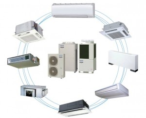

Инженерные системы
Системы кондиционирования и их виды
Кондиционирование включает в себя создание и поддержание в более-менее автоматизированном режиме заданных температурных параметров воздуха в закрытых помещениях для создания оптимальных условий для обеспечения изнедеятельности
людей,условий для нормальной работы оборудования, сохранности материалов.
{kind=link}
Виды кондиционирования:
- комфортное — для создания и поддержания оптимальных температурно-влажностных условий;
- технологическое — применяется при создании искусственных условий для обеспечения определенного технологического процесса, либо для хранения определенных материалов.
По производительности кондиционеры обычно делят на три группы.

{kind=link}
1.
Для кондиционирования небольших помещений (бытовые кондиционеры) — категория RAC (Room Air Condition). К бытовым кондиционерам принято относить моно- и сплит-системы производительностью до 6—8 кВт.
2.
Для кондиционирования помещений площадью от 60—80 м² до 200—300 м² применяют полупромышленные кондиционеры — класс PAC (Packaged Air Condition) мощностью более 6 кВт (по некоторым классификаторам — более 8 кВт).
3.
Для централизованного кондиционирования помещений большой площади (зданий или целого ряда помещений) с помощью одной системы кондиционирования и вентиляции (СКВ) применяют промышленные модели кондиционеров (Unitary). К ним
относят системы мощностью свыше 20—25 кВт.
Моноблоки
К бытовым и полупромышленным моноблокам относятся оконные и мобильные (напольные) кондиционеры.
Оконные кондиционеры.
Оба теплообменника (конденсатор и испаритель) и компрессор размещены в одном компактном блоке. Холодильный контур герметичен. Монтаж достаточно прост.
Однако, поскольку компрессор размещен в блоке (а блок — в помещении), уровень шума значительно повышен.
Мобильные (напольные) кондиционеры
Состоит из одного блока, теплый воздух от конденсатора кондиционера выводится из помещения в специально приготовленное отверстие или форточку (дверь) на улицу, обычно с помощью гофрированного воздуховода диаметром до 200 мм. Уровень
шума повышен, так как компрессор находится тут же — в блоке. Производительность тоже невысока — вытяжной воздуховод, как правило, не теплоизолирован.
{kind=link}
Сплит-системой называется любой кондиционер, состоящий из двух блоков — внутреннего и внешнего.Компрессор находится во внешнем блоке, поэтому, по сравнению с моноблоками, уровень шума значительно ниже. Блоки соединены между собой электрическим
кабелем управления (и электропитания) и медными трубами, по которым циркулирует фреон. Принцип охлаждения основан на испарении фреона в теплообменнике внутреннего блока кондиционера (испарителе) — при этом и происходит охлаждение
— и конденсации фреона в теплообменнике наружного (внешнего) блока — конденсаторе.
Если внутренних блоков два и более — это мульти сплит-система.
По типу внутреннего блока сплит-системы бывают:
- настенные;
- кассетные;
- канальные;
- универсальные
Сплит-системы, в свою очередь, бывают обычными и инверторными.
В обычном кондиционере, при постоянно работающем внутреннем блоке, компрессор включается при превышении величины температуры поступающего во внутренний блок воздуха над заданным с пульта управления (ПДУ) значением.Как только температура поступающего на внутренний блок воздуха достигает заданного на пульте управления значения, компрессор, по команде с платы управления внутреннего блока, отключается.
С инверторными моделями дело обстоит несколько иначе. Схема управления в инверторе более сложная, благодаря чему компрессор работает с переменной производительностью. Процесс кондиционирования происходит постоянно, лишь с разной интенсивностью. Это дает выигрыш в потреблении электроэнергии, а также по шуму, уровень которого существенно ниже (за счет использования двигателя постоянного тока и за счет того, что большую часть времени компрессор работает при минимальных оборотах).
Виды промышленных кондиционеров:
- мультизональные системы кондиционирования;
- чиллеры и фанкойлы;
- центральные кондиционеры;
- крышные кондиционеры (руфтопы);
- системы специального кондиционирования, прецизионные кондиционеры.